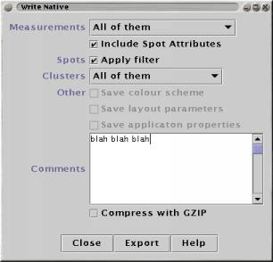

Export some or all of the data in maxdView's native file format (which uses XML syntax).

Measurements chooses between all measurements, or just those that are curently visible (Measurement visibility is controlled using the "Show?" checkboxes in the Measurements control panel).
Include Spot Attributes controls whether any Spot Attributes are stored in the file.
Use the Apply filter checkbox to determine whether the currently active Filters (if any) are applied to the spots as they is saved.
Clusters chooses between saving no Clusters, all of them or just those that are curently visible (Cluster visibility is controlled using the "Show?" checkboxes in the Cluster Manager).
Free-text Comments can also be stored with the along with the data.
The final option is to Compress the file. The Read Native plugin can load compressed files directly, so this is a convenient way to save disk space.